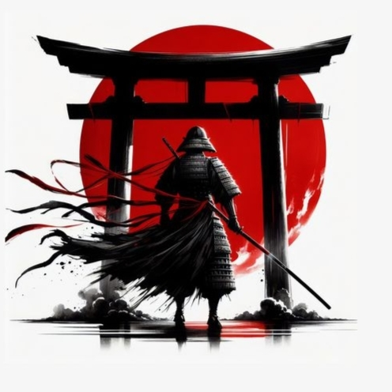

house
the place where you training , this is your house of piece
we 're takashi - a super creative and minimal agency web fans
we 're just a fan website for Japanese worriers and that's all we do
please let us know if you have an idea for our design and tell us your feedback
there's on reason to join here but if you like we could show you what we can do
stay calm and fucos
the place where you training , this is your house of piece
how mach skills had you got ? nothing ...thats what we care about let us make the best copy of yourself
be like thunder eat any thing or any one stand forward you or try to stop you continue your road
what are you willing to sacrifice ? ask this question to yourself and think before you answer no one care about it just you

veiw our gallery

The ZiQi (“Purple Breath”) is a finely crafted full-tang katana forged from spring steel, combining resilience, lively handling, and refined aesthetics. Its shinogi-zukuri construction ensures excellent strength and balance, making it suitable for both martial practice and elegant display.
Samurai swords, particularly the katana, have captivated the imaginations of many, including Australians who appreciate the blend of artistry, history, and lethal precision. But what truly sets a katana apart from other swords? Let’s delve into the distinctive characteristics that make this iconic weapon stand out.
including Australians who appreciate the blend of artistry, history, and lethal precision. But what truly sets a katana apart from other swords?
read about us

The samurai were the elite warrior nobility of pre-industrial Japan. Emerging as private bodyguards during the Heian Period (794–1185), they later rose to the highest social caste. Bound by the Bushido code of honor, they defined Japanese history for centuries until their abolition in the 1870s
Emergence: Originally hired to protect the lands of wealthy aristocrats, samurai clans eventually gained enough power to rule Japan. Minamoto no Yoritomo established the first military government (shogunate) in 1185.